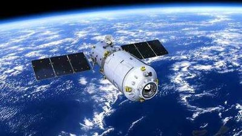
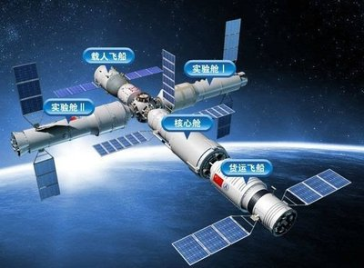

- 你当前所在的页面：首页>返回>航天探测器
我国成功发射天宫二号实验室
- 信息发布时间:2016-09-15 13:08 网页性质：安全
- 
天宫二号空间实验室已于2016年9月15日22时04分09秒在酒泉卫星发射中心发射成功，将与神舟十一号飞船对接。2016年10月19日3时31分，神舟十一号飞船与天宫二号自动交会对接成功。2016年10月23日早晨7点受控离轨
天宫二号空间实验室，是中国研制的继天宫一号之后的第二个空间实验室，将用于进一步验证空间交会对接技术、燃料补给及再生式循环等一系列空间试验。
天宫二号于2016年9月15日22时04分09秒在酒泉卫星发射中心由长征二号F运载火箭发射升空，之后将与神舟十一号载人飞船和天舟一号货运飞船对接。

早在1992年，中国就确立了以建立空间站为目标的航天计划。这一计划分三步，第一步是载人飞船阶段，目标是能够把宇航员送到太空，正常运行若干天，并成功返回。
第二步是空间实验室阶段。在这个阶段要解决组装、交互对接、补给以及循环利用等四大技术。这些技术关系到空间站的组装、宇航员在空间站的生存等关键问题。天宫一号就是中国在第二步计划中为了解决交互对接问题而发射的一个目标飞行器。天宫一号被送上太空之后，通过对接可以被改造成一个短期有人照料的空间实验室。
对接技术成熟之后，就可以发射真正的空间实验室——天宫二号。天宫二号将完成再生式循环系统、有效载荷和应用系统的实验以及其他一些科研项目。经过空间实验室阶段，在中国的载人航天“三步走”计划中，我国最终要建设的是一个基本型空间站，为此，我国会在海南文昌新建继酒泉、太原、西昌之后的第四个航天发射场，主要承担地球同步轨道卫星、大质量极轨卫星、大吨位空间站和深空探测卫星等航天器的发射任务。
天宫二号为天宫一号目标飞行器的备份器，对其进行微小的改进后，由长征二号F运载火箭发射，即类似天宫一号目标飞行器的发射情况。但因天宫一号消耗燃料较少，飞行寿命延长，成功地完成了中国航天三步走的第二步第一阶段，工程人员决定提高天宫二号的质量，约13吨，和原计划发射的天宫三号同质量级别。如此一来，天宫二号可能是取代了原计划天宫三号的任务，完成三步走第二步的第二阶段。但天宫三号是否被取消，而天宫二号任务结束后是否会直接发射空间站的核心舱尚不明了，相关决定大概取决于天宫二号任务的结果。
2011，中国成功年发射了天宫一号空间试验室。
天宫一号实际上是空间实验室的实验版，采用两舱构型，分别为实验舱和资源舱。之后又成功发射了发射神舟八号、神舟九号、神舟十号。
2014年3月2日，全国政协委员、中国载人航天工程总设计师周建平表示，按照我国载人航天计划，在2020年前后建成空间站之前，将发射天宫二号空间实验室，目标是建成我国正式的空间实验室大系统。
2014年9月10日上午，太空探索者协会第27届年会开幕，中方大会主席杨利伟透露：2016年我国将发射天宫二号空间实验室，并发射神舟11号载人飞船和天舟一号货运飞船，与天宫二号交会对接。突破和掌握推进剂补加等空间站关键技术，并开展一定规模的空间应用。
2014年9月，天宫二号空间实验室、长征七号运载火箭、天舟货运飞船，以及神舟十一号、长征二号F运载火箭等主要产品已进入研制关键阶段，航天员地面训练和地面设施设备准备工作，包括空间站组成模块中的核心舱和两个实验舱研制工作也正在按计划进行。海南文昌航天发射场已基本完工，具备发射条件。
2014年10月初，天宫二号空间实验室本阶段总装工作开始以来，实验舱、资源舱单舱总装分别完成了空间应用系统配套设备安装、电缆安装等总装工作，充分验证了空间应用系统载荷设备与整器的机械接口匹配性，并顺利完成正样实验舱的质量特性测试，为保证总装交付电测顺利进行，打下坚实基础。
2015年1月，中国航天科技集团公司五院完成天宫二号空间实验室空间应用系统载荷设备安装并交付电测。这是空间实验室本阶段总装的标志性节点。
2015年7月，用于发射天宫二号的长征二号F运载火箭开始总装。
2016年9月15日22时04分09秒，天宫二号在酒泉卫星发射中心成功发射。